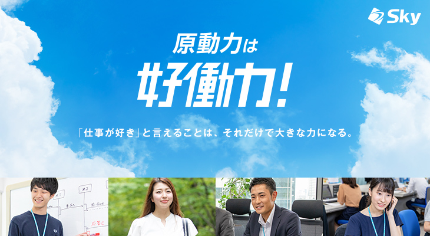
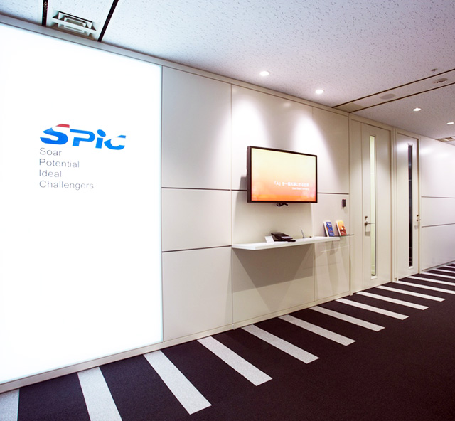

Sky株式会社
-

Ｓｋｙ株式会社は、自ら商品を創り出すソフトウェアメーカーとして、お客様の要望に応じて開発を請け負うソフトウェアハウスとして、新たなソフトウェアの可能性を追求することで、より豊かな情報社会の実現を目指しています。また、人や社会に役立つ製品やサービスのあり方を考えつづけ、青空のように大きな発想を持つと同時に、しっかりと地に足をつけ、必ず最後までやり遂げることや常に全員参加に徹することで、社会に必要とされる商売を追求しつづけます。
私は、企業理念の「人」「社会」「技術」をつなぐ製品とサービスを通じて、幸せと面白さあふれる豊かな情報社会の実現を目指す。という点や、常に新しい「好働力」を求めて走り続けるという考え方にとても魅力を感じた。
エスピック（株）
-

1. 独立系の歴史ある中堅ＳＩｅｒ
当社は1965年の創業から半世紀にわたって業務用ソフトウェアのコンサルティング、設計、開発、導入、保守をワンストップで提供しているＳＩ企業です。 独立系として成長してきたため、企業内の一体感や創造性あふれる柔軟な発想も得意分野です。
2. 顧客志向が強い企業文化
当社にはビジネスシーンにおいてもお客様と一緒に汗をかくＩＴエンジニアが多数在籍しています。 これは企業理念でもある「Good People Company」を社員がそれぞれ大切にし、実践しているからです。 顧客満足度調査でも「協力度」が常に好成績なところも私たちの強みです。
3. 幅広い技術領域と高品質なサービスを提供ＩＴシステムはもはや１社の技術やサービスでは成り立ちません。複数の製品やサービスを複合的に提供できて初めてお客様のニーズに答えることができます。 高品質な製品やサービスを提供するにはビジネスパートナーとのビジネスネットワークを越えるヒューマンネットワークこそが必要です。 私たちは「人間尊重」の考えに基づき、お客様はもちろん、仕入先やパートナーとの関係をとても大切にしています。
私はこのエスピックさんの強みを拝見し、自分には無い柔軟な考え方・発想という部分や、売上や利益はもちろん大切なのですがそれだけにとらわれず、 人間中心の価値軸に沿った企業や社会の構築を目指せるというところにとても興味を持てたし、成長できるなと感じれる会社だった。